Simulation-Based System Design
- How to generalize UAM/UAV aircraft system design?
- How to improve conceptual design fidelity?
- Development of the RISPECT+ conceptual design tool
- Physics-based electric propulsion system modeling
Home / Research
What we do
Three research areas — simulation-based system design, simulation-based system operation, and experiment-based system analysis — and six guiding questions connect our RISPECT+ design code, our mission operation framework, and our test benches.
Overview
Every project at AADL asks one of six questions. Each research area below lists its two guiding questions and the short answers we are building.
Research keywords
How to generalize UAM/UAV aircraft system design? · How to improve conceptual design fidelity?
1-A · In collaboration with SNU
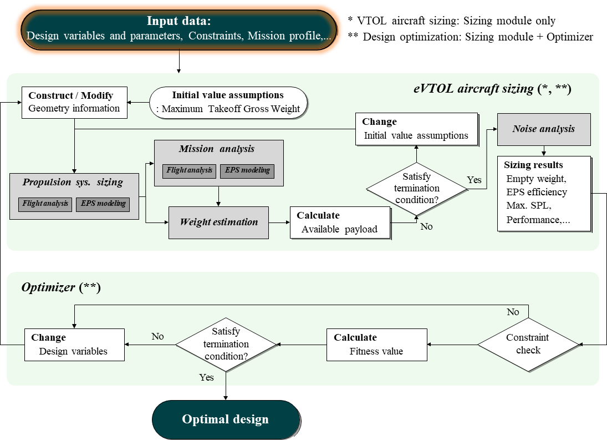
RISPECT+ (Rotorcraft Initial Sizing and Performance Estimation Code and Toolkit+) is the in-house conceptual design code of AADL. Its sizing loop starts from the input data (design variables and parameters, constraints, and the mission profile) and an initial assumption of the maximum takeoff gross weight. It then constructs or modifies the geometry, sizes the propulsion system through flight analysis and electric propulsion system (EPS) modeling, runs the mission analysis, estimates the weights, and computes the available payload until the termination check is satisfied.
The sizing results are the empty weight, EPS efficiency, max. SPL, and performance; an outer optimizer changes the design variables until the constraints and fitness converge.

Journal of Aircraft, Vol. 59, No. 2, 2022
Four new modules let one sizing framework handle wingless, vectored-thrust and lift+cruise concepts with series, parallel and series/parallel hybrid-electric architectures: flight analysis, hybrid propulsion sizing that includes transition flight, mission analysis with a new battery charge/discharge criterion, and weight estimation of the mechanical and electric powertrains. Validated against other sizing tools, the study found an optimal degree of hybridization where the battery sizing criterion changes from discharge C-rate to total energy, and showed that hybrid-electric propulsion can extend the range of a battery-electric VTOL aircraft by more than four times (626 km versus 132 km for the optimized designs), enough for intercity UAM missions.
Related outputs: Journal of Aircraft (2022, 2024), European Rotorcraft Forum (2018, 2019).
1-B · In collaboration with SNU
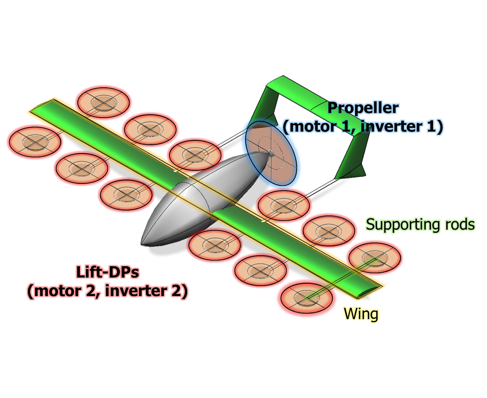
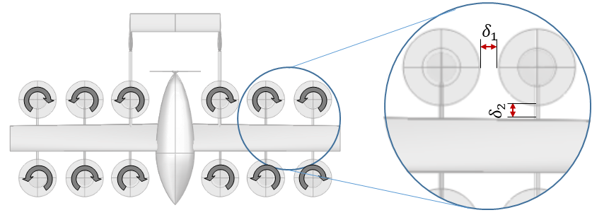
A lift+cruise UAM aircraft is designed with aeroacoustic effects considered in hovering conditions. Electric-circuit analysis models enhance the conceptual design: efficiency maps are built for the sized motors (motor 1 for the propeller, motor 2 for the 12 distributed lift propellers), and the mission analysis tracks the efficiencies and power losses of the EPS components.
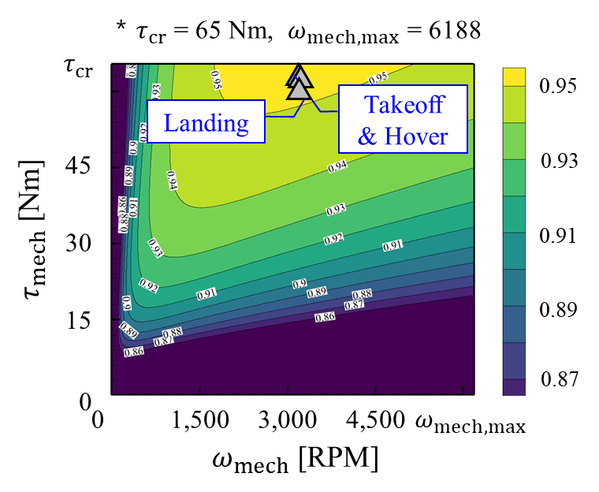
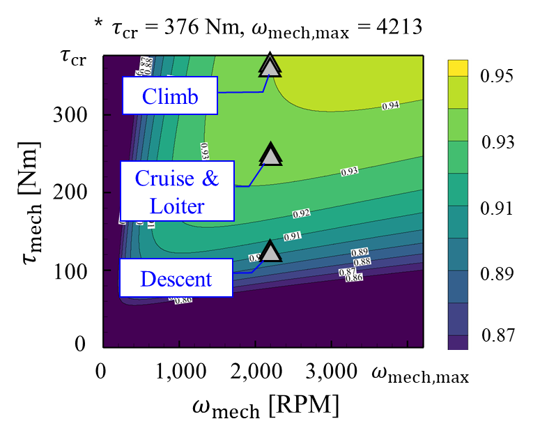
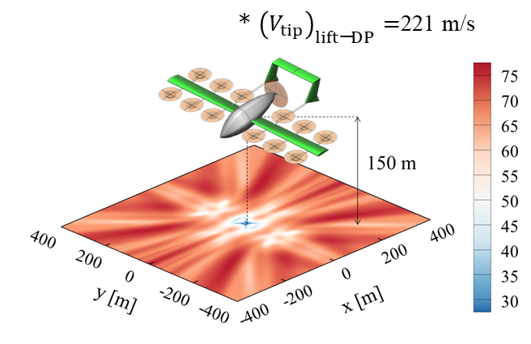
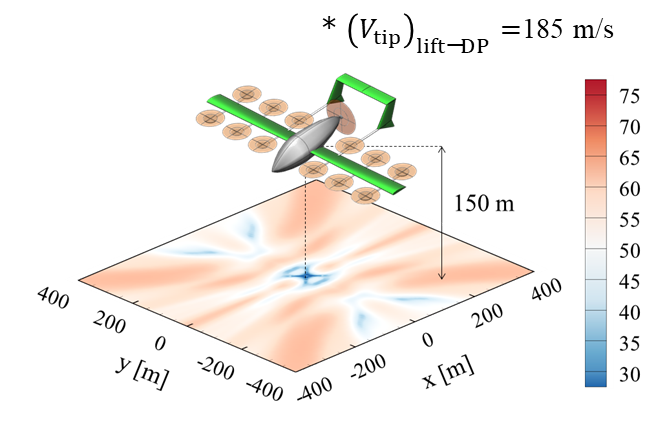
Journal of Aircraft, Vol. 61, No. 2, 2024
Motor, inverter and battery modules are built from equivalent circuits and semi-empirical models: a permanent-magnet synchronous motor model with its operation control strategy, average switching and conduction loss models for the inverter, and a near-linear discharge model that captures the battery voltage drop. Together with battery stack calculation, regression models for motor and inverter parameters, and the choice of a direct or geared drive, the method shows how the drive type and gear ratio change the sized aircraft: available payload, power losses, battery cell counts and aircraft dimensions differ significantly from the conventional low-fidelity approach.
Energy, Vol. 360, 2026 · co-corresponding author
Generator (equivalent circuit with maximum power per ampere (MPPA) control), rectifier (average loss model) and turboshaft engine (regression on referred-parameter engine data) modules update the component efficiencies inside the RISPECT+ sizing loop. For a representative turboelectric AAM aircraft, accounting for the efficiency variation over the mission increased the electric propulsion system weight by about 12.6 % and the thermal management system weight by about 17.4 %, and reduced the available payload by about 36.3 % compared with a fixed-efficiency approach. The DC-link voltage that maximizes payload (180 V) differs from the voltages that maximize electrical efficiency in takeoff (220 V) and cruise (240 V), and comparing generator and turboshaft speeds gives the gear ratio between them.
Applied Energy, Vol. 328, 2022
The sizing method is parameterized for each component of the fuel cell–battery hybrid system, reflects the operating characteristics of the battery and the fuel cell, and balances power between the two sources to find the optimal power split. Applied to an eVTOL aircraft with technology trends quantified for the expected time of production, the sizing results show when a fuel cell–battery hybrid eVTOL aircraft becomes feasible and that the operation and manufacturing plan should be considered in the design. This summary follows the authors' AIAA AVIATION 2022 paper (AIAA 2022-3514) that preceded the journal article.
International Journal of Aeronautical and Space Sciences, Vol. 26, 2025
A rotor aeroacoustic solver and an aerodynamic coupling module, which corrects the low-fidelity rotor analysis with its differences from a higher-fidelity model, bring rotor–rotor interaction into RISPECT+. For the baseline eVTOL aircraft, rotor interaction raised the gross weight by only 1.78 % but raised the maximum A-weighted sound pressure level from 79.3 to 82.3 dBA. Multi-objective design optimization showed a clear trade-off between gross weight and noise impact, and the sensitivity study showed that the hovering tip Mach number affects the noise more than the gross weight does.
Related outputs: Journal of Aircraft (2024), Applied Energy (2022), Energy (2026), International Journal of Aeronautical and Space Sciences (2025), European Rotorcraft Forum (2022).
1-C · In collaboration with SNU · KASA project
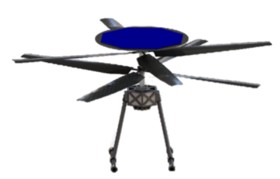
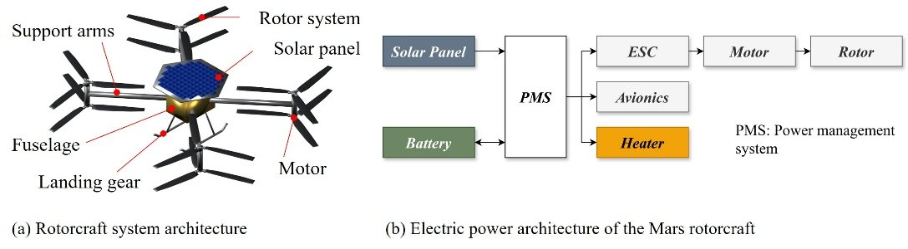
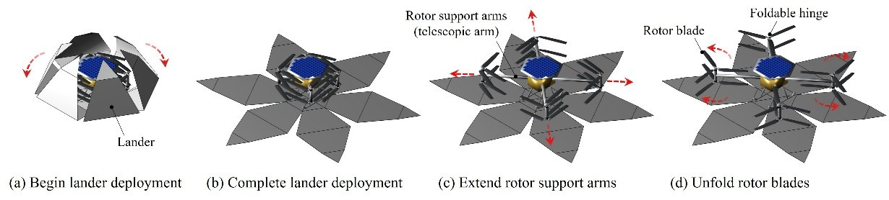
Martian atmospheric conditions are incorporated into the UAV conceptual design, and the results are validated against NASA conceptual design results. The concept covers the lander deployment sequence (lander deployment, extension of the rotor support arms, and unfolding of the rotor blades) and the electric power architecture of solar panel, battery, PMS, ESC, motor, avionics, and heater.
For thermal management, a heat-transfer simulation with a thermal resistance network gives the battery and heater temperature and SOC histories over Martian day–night cycles.
Project: Core technologies for high-performance rotors and electric drive systems for Mars exploration rotorcraft (화성 탐사 회전익기용 고성능 로터 및 전기구동 시스템 핵심기술 개발), KASA, 2023.06 – 2026.12. See Projects.
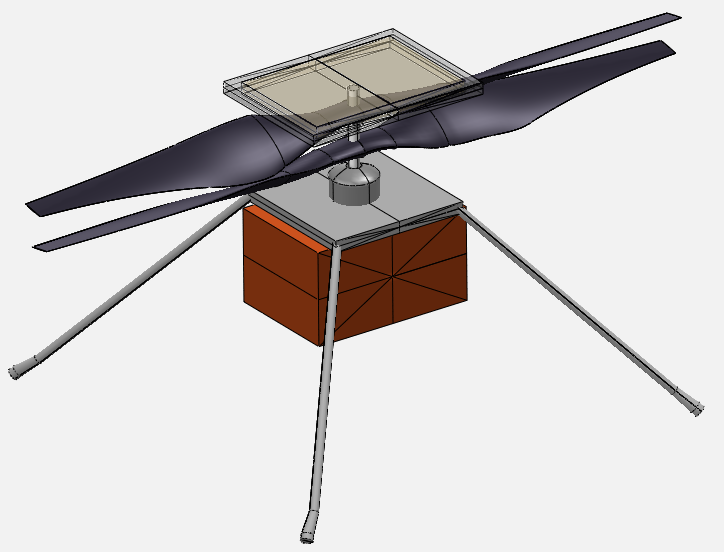
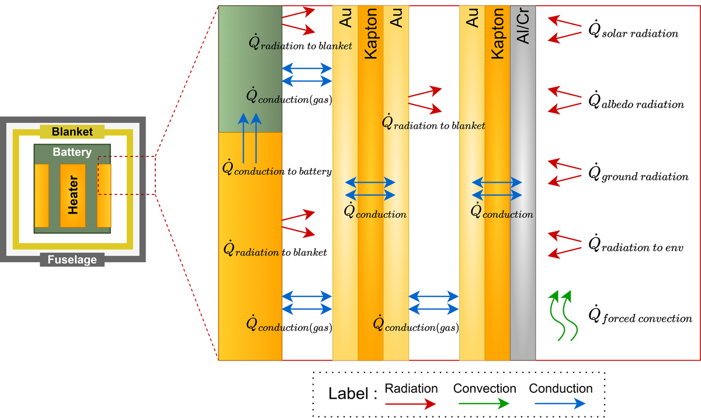
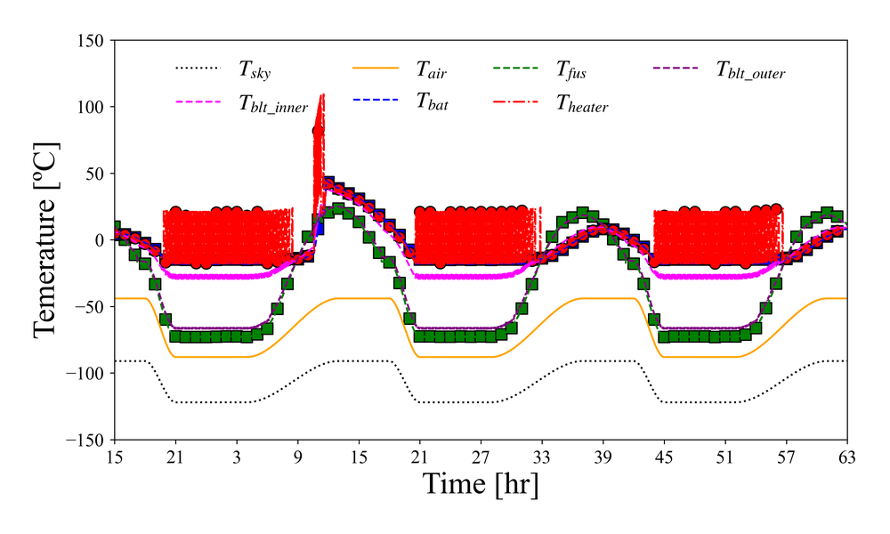
Related outputs: KSAS conferences (2023, 2024).
1-D · DAPA project
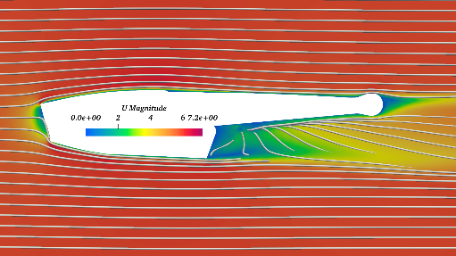
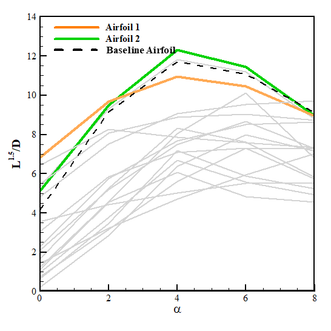
Aerodynamic results at low Reynolds number conditions are brought into the conceptual design of a micro UAV.
Project: Low-Reynolds-number aerodynamic analysis and full-vehicle analysis technology for micro UAVs (초소형 무인기의 저레이놀즈수 공력분석/해석 및 전기체 해석기술 개발), DAPA, 2024.08 – 2025.12. See Projects.
1-F · In collaboration with KITECH

Three agents share the conceptual design task. Agent 1 sets the design parameters through retrieval-augmented generation (RAG) from prior design results; Agent 2 executes the conceptual design tool, RISPECT+; Agent 3 optimizes the design through an evolutionary algorithm.
Related outputs: ICAS Congress (2026), KSAS conferences (2025, 2026).
1-G · In collaboration with KITECH · MOTIE project
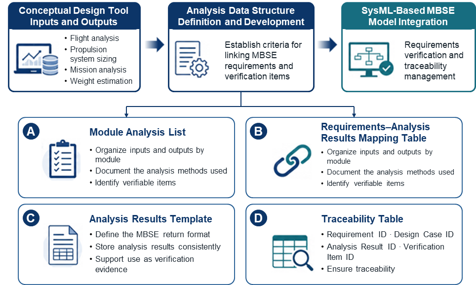
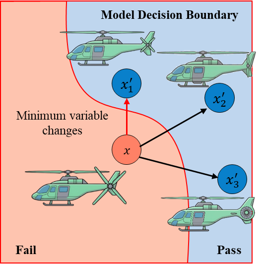
Project: Reference-model technology for urban-logistics and civil–military convergence drones (도심물류 및 민군융합드론 참조모델 기술 개발), MOTIE, 2026.07 – 2028.12. See Projects.
How to optimize aircraft operations? · How to coordinate multiple aircraft for missions?
2-A · In collaboration with DLR · NRF project
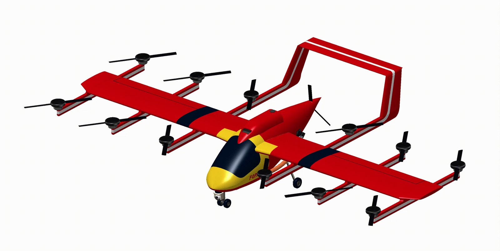
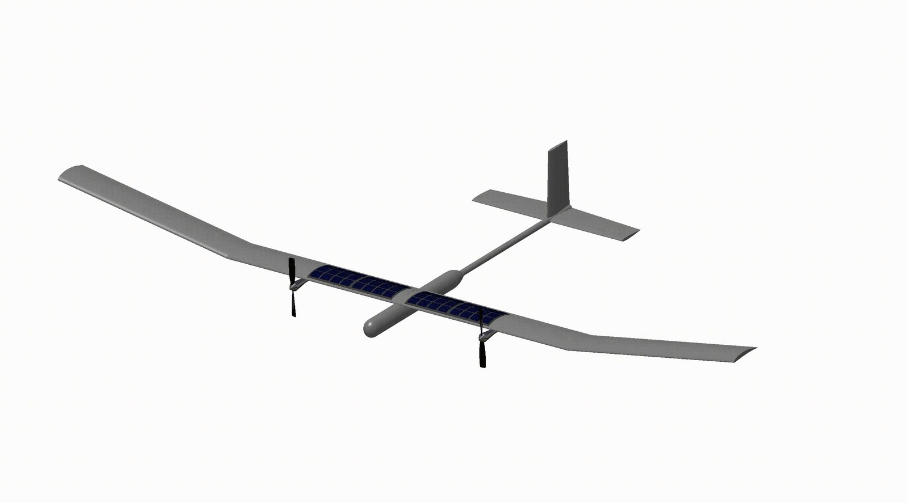
A framework for dynamic mission operation in wildfire scenarios combines environment-adaptive mission optimization with multi-agent operation strategies. A wildfire suppression aircraft and a long-endurance surveillance aircraft are sized with RISPECT+, and terrain–weather data for three scenarios (Salamis, Pyrenees, Palisades) feed a fire spread simulation with the fastest spread route. System-of-systems (SoS) optimization based on measures of effectiveness (MoE) then decides the fleet size and tactics.
Project: Damage prediction and strategy model for large wildfire disasters based on multiple data sources (대형 산불 재난에 대응하는 다중 데이터 기반 피해 예측 및 전략 수립 모델 개발), NRF, 2025.09 – 2026.08. See Projects.
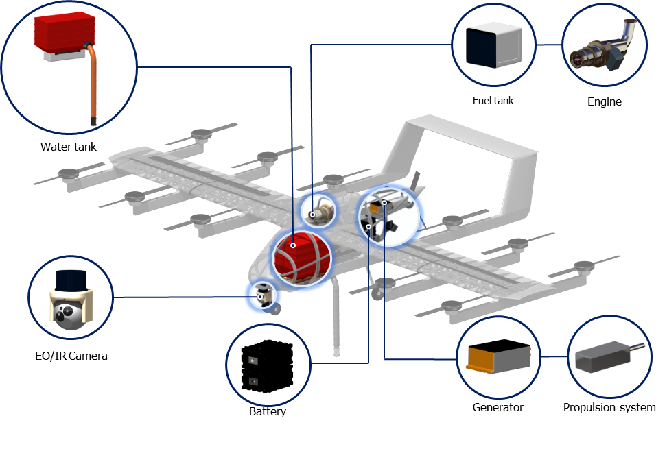
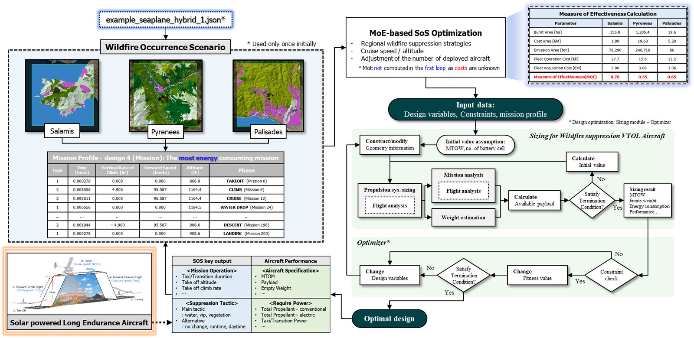
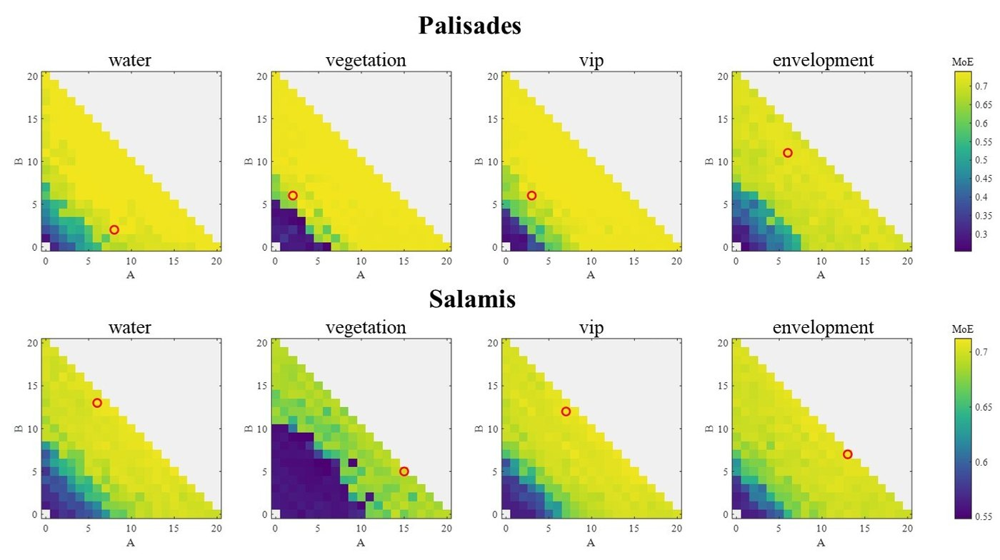
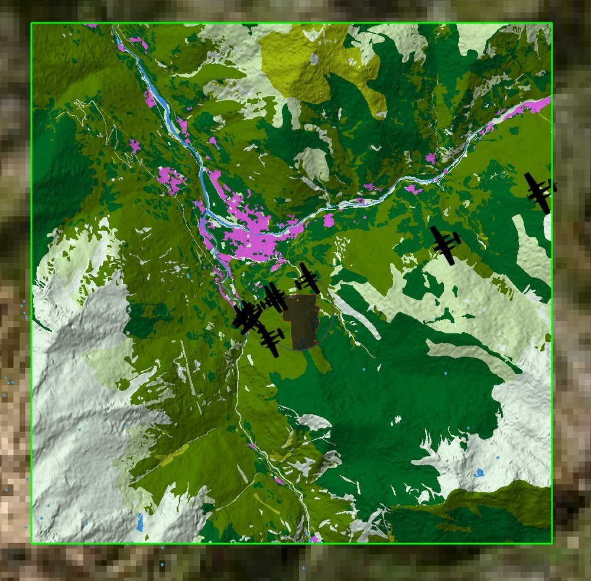
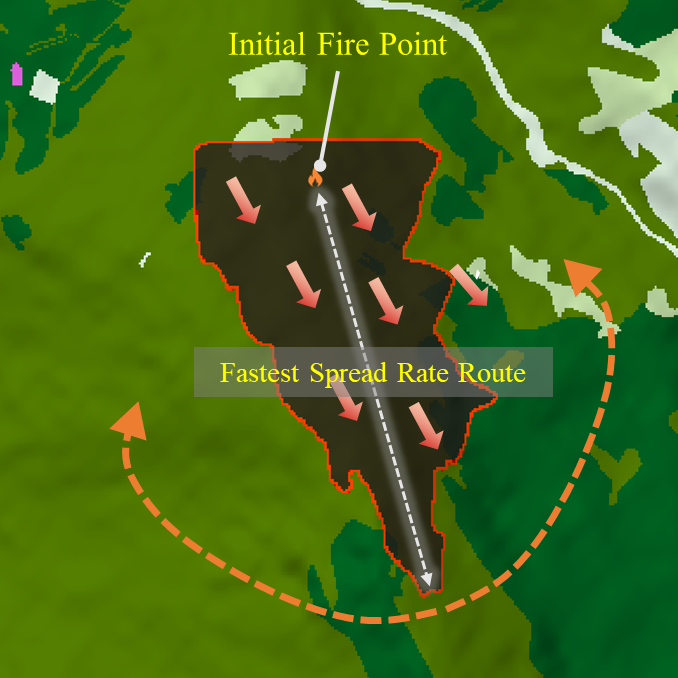
Related outputs: EASN International Conference (2025), AIAA AVIATION Forum (2026), 한국항공우주학회지 (2026), KSAS conferences (2024, 2025), 한국방재학회 (2025).
2-B · In collaboration with KITECH
How to capture unmodeled physical phenomena? · How to improve simulation fidelity through experimental data?
3-A · In collaboration with KITECH, DLR · KITECH projects
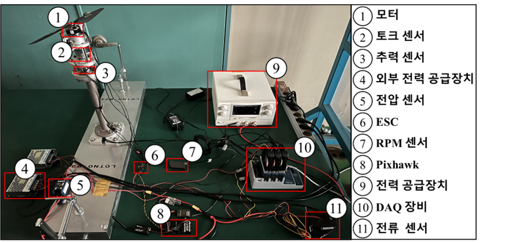
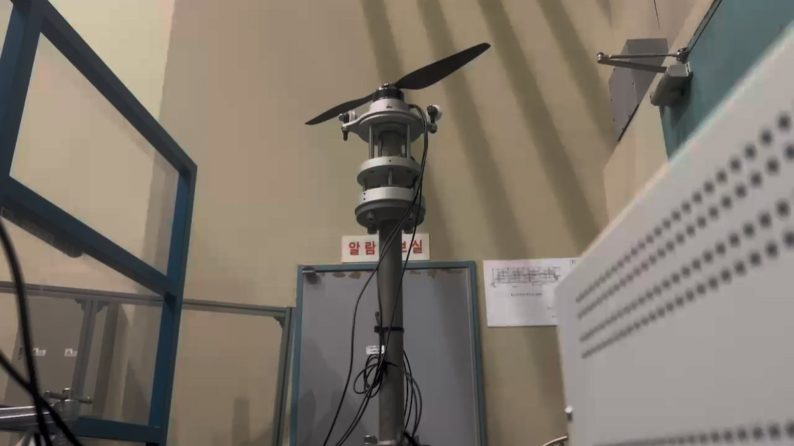
Propeller rotation tests measure voltage, current, torque, thrust, and RPM. FFT-based MCSA of the DC-link current reveals the correlation between RPM, thrust, torque, and current by damage location, type, and size, and AI-based fault detection is trained on the current data.
Projects: Test scenarios for TTE certification based on a commercial propeller balancer (상용 프로펠러 밸런서 기반 TTE 인증 시험 시나리오 구축), KITECH, 2026.07 – 2026.11; Electrical-signal data acquisition and processing for multimodal data integration (멀티모달 데이터 통합을 위한 전기 신호 데이터 수집 및 처리 연구), KITECH, 2025.03 – 2025.06. See Projects.
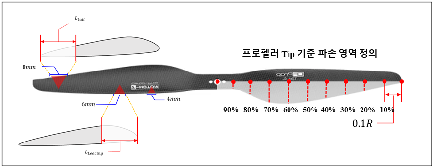
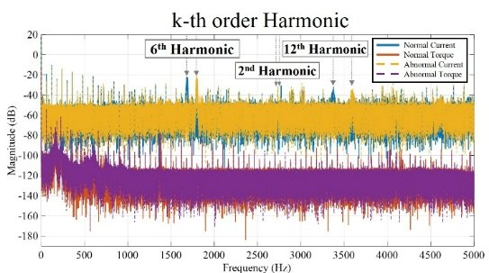
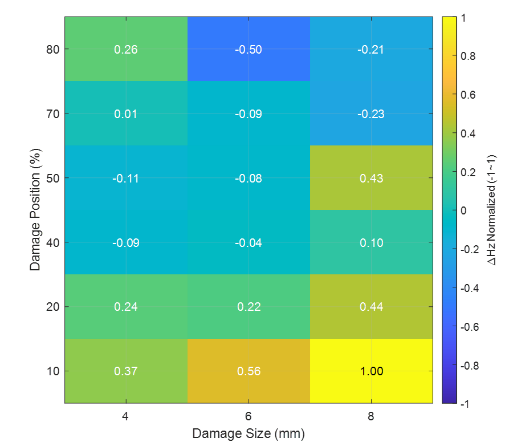
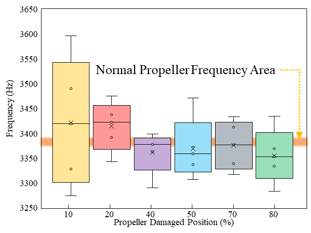
IEEE Access, Vol. 14, 2026
In ground tests across 36 damage scenarios of different location and severity, specific harmonics of the DC-link current respond consistently to propeller damage, the sixth harmonic most strongly. Leading-edge damage produced frequency standard deviations up to 93.5 Hz, about 2.26 times those of trailing-edge damage; tip damage widened the bandwidth up to 322.07 Hz, while damage near the hub stayed as low as 108.7 Hz. Motor current alone therefore discriminates damage presence, type and coarse location, a sensorless route to UAV ground inspection and maintenance.
Related outputs: IEEE Access (2026).
3-B · In collaboration with KARI
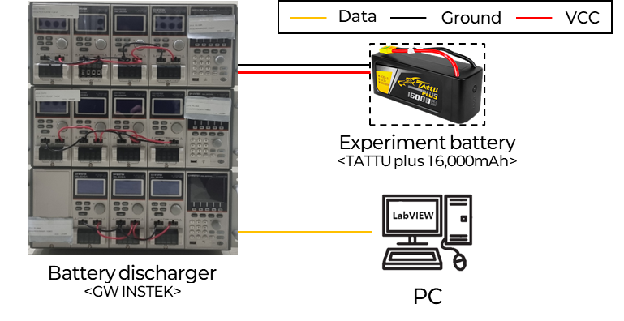
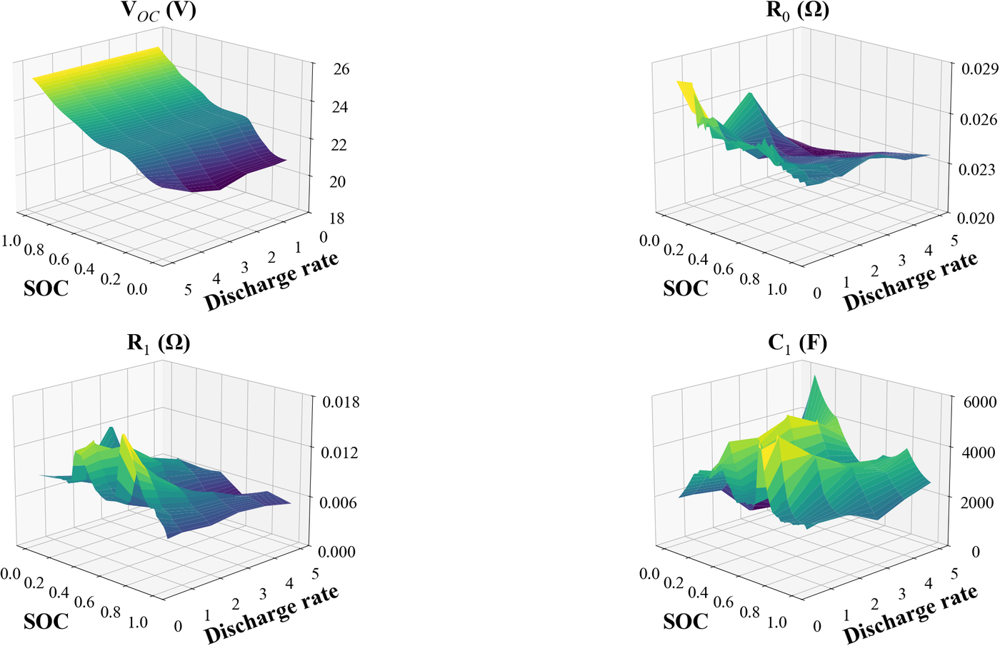
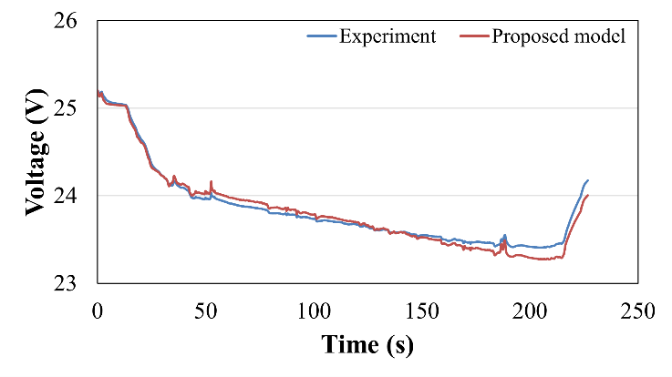
A dynamic performance model predicts the available-capacity-based SOC and voltage of lithium-polymer batteries. Peukert's law, a first-order RC equivalent circuit model, and Gaussian process regression for parameter prediction are all configured from experiment data, and the model is evaluated against UAV flight-test data provided by KARI.
IEEE Transactions on Transportation Electrification, 2026 (early access)
Terminal voltage is predicted against a state of charge normalized by the available capacity: a dynamic form of Peukert's law estimates the available capacity, and a 1-RC equivalent circuit model whose open-circuit voltage and parameters depend on SOC and discharge rate through Gaussian process regression gives the voltage. Identified from room-temperature experiments, the framework reached average RMSE/MAE/maximum errors of 71/59/151 mV in validation with randomized pulse-and-recovery discharge profiles, against 106/77/262 mV for a constant-parameter baseline and 74/62/155 mV for a fixed-exponent capacity baseline, and RMSE of 60–104 mV at 1.4–2.0 ms per step in eight flight-test cases, within the validated operating envelope.
Related outputs: IEEE Transactions on Transportation Electrification (2026), KSAS conferences (2024, 2025).
3-C · In collaboration with KARI
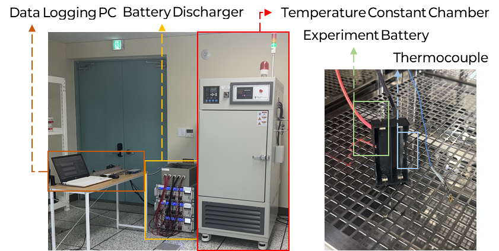
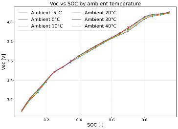
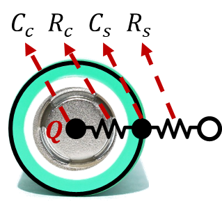
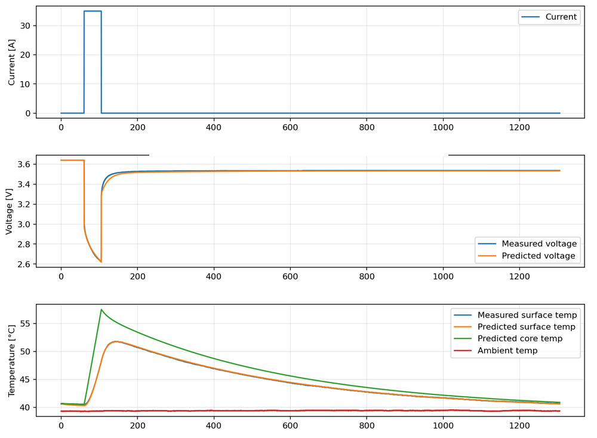
A dynamic model predicts the voltage and the core and surface temperature of lithium-ion batteries. A second-order RC equivalent circuit model and a two-node thermal model are parameterized by Gaussian process regression from experiments over multiple ambient temperatures and C-rates.
Related outputs: IEEE ITEC Conference (2026), KSAS conference (2026).
3-D · KARI project
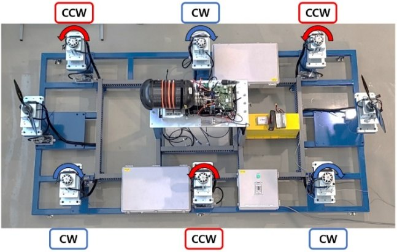
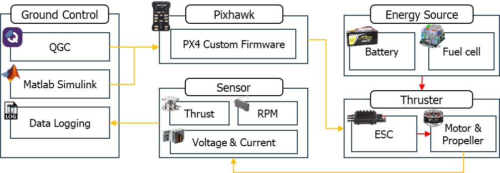
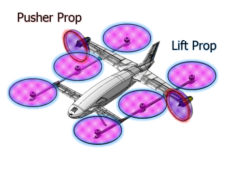
A lift+cruise eVTOL concept uses a fuel cell–battery hybrid: the lift propellers run on the battery in axial flight and the pusher propeller on the fuel cell in cruise. The hardware-in-the-loop (HIL) ground test platform combines PX4/Pixhawk, MATLAB/Simulink, and thrust/RPM/voltage/current sensing, and a physics-based 1-D fuel-cell model is compared with the experimental data.
Project: Ground performance test of a hydrogen fuel-cell hybrid power source (수소연료전지 하이브리드 동력원 지상성능시험), KARI, 2023.08 – 2023.12. See Projects.
Related outputs: 한국항공우주학회지 (2026), KSAS conference (2025).
Research directions
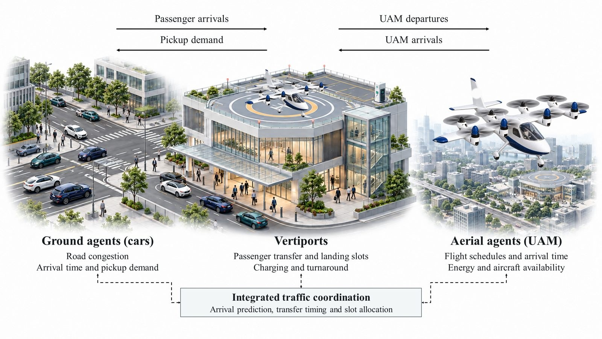